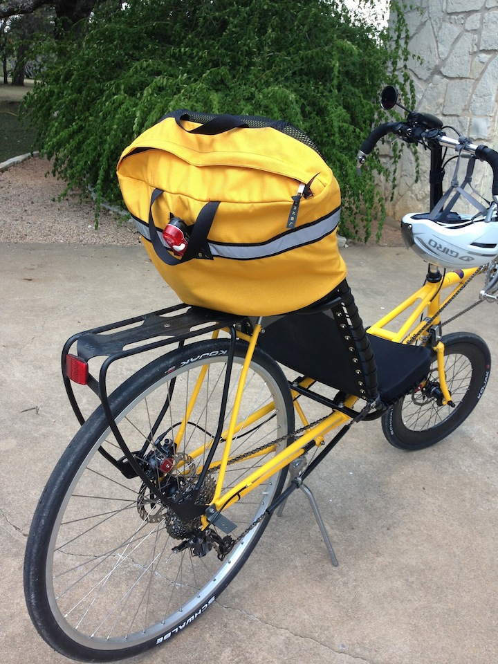
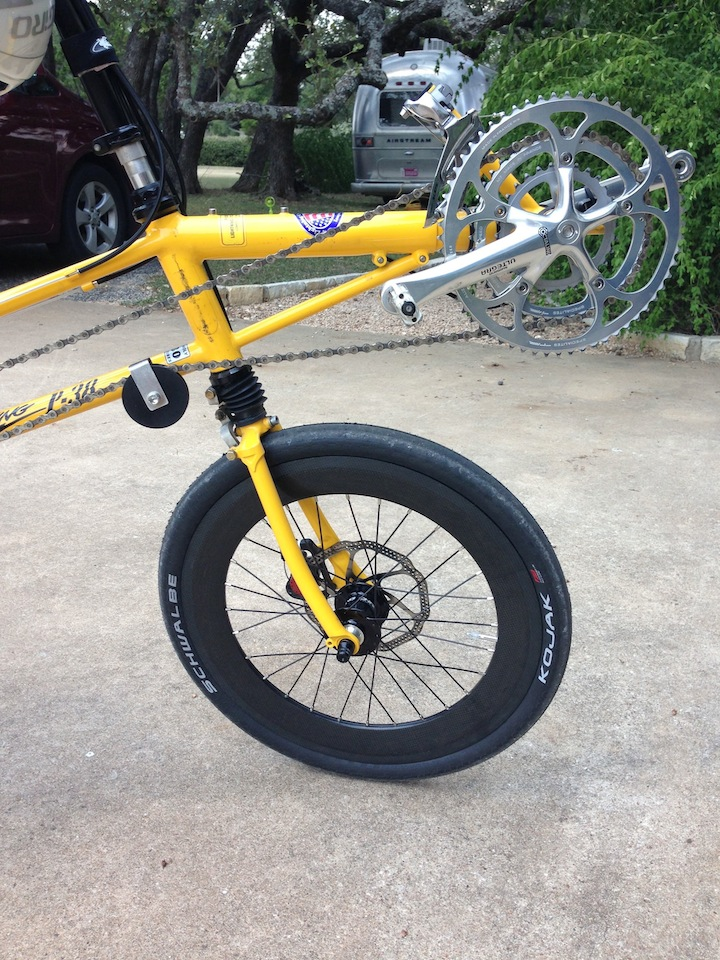

P-38 Setup and Components
01 Sep 2013
Since I seem to be riding the F-40 as a P-38 more than I thought I would I purchased an Arkel seat back bag. Easy/fast slip over mounting. Lots of room. Extra inside pockets to hold cell phone, glasses, tools, camelbak, etc. I like it.

I also put the carbon deep V wheel on the front that I had originally purchased for the Baron from Bent-Up cycles. Order another deep V rim for the rear tire. These wheels are expensive but very fast with the Kojaks on them. The Kojaks help with the Texas chip-seal.
Replaced the slow Marathon Plus tires with the Kojaks. Now that I have some experience riding at speed with the F-40 I’m not so worried about tire blowouts. I know the Kojaks are tough because I’ve used them on the Musashi for thousands of miles.
The Kojaks are 406-35 on the front and 700C-35 on the back. Very tight fight on the bike. Once I lose about 30 pounds on the engine I’ll probably go to a narrower (28mm?) tire from Schwalbe.
